Fringe shape and blend
Check the fringe length, cut and side pieces against the target face shape and how it blends with the wearer's own hair.

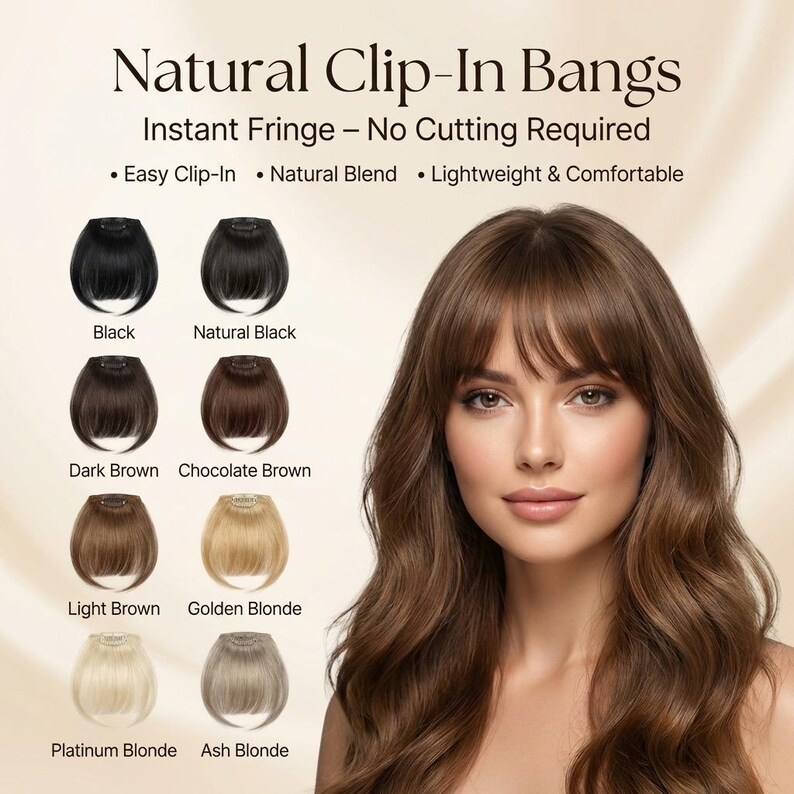
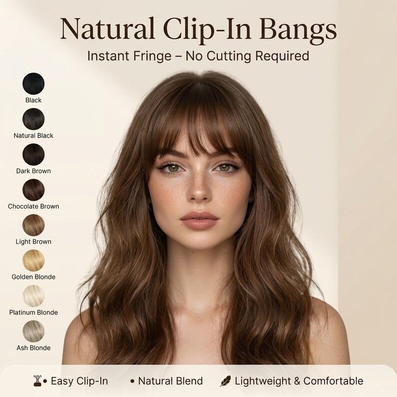
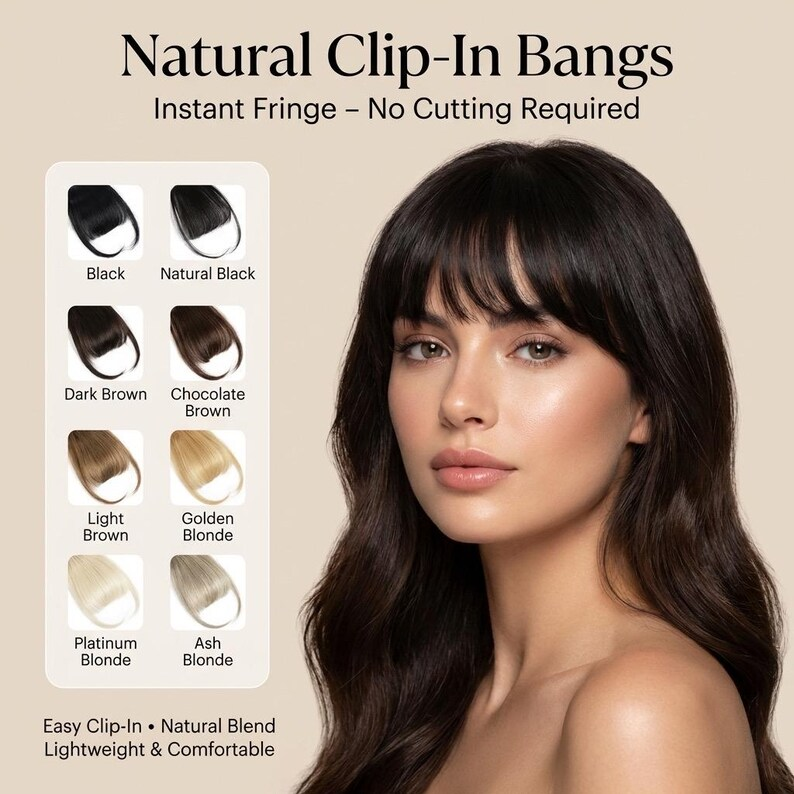
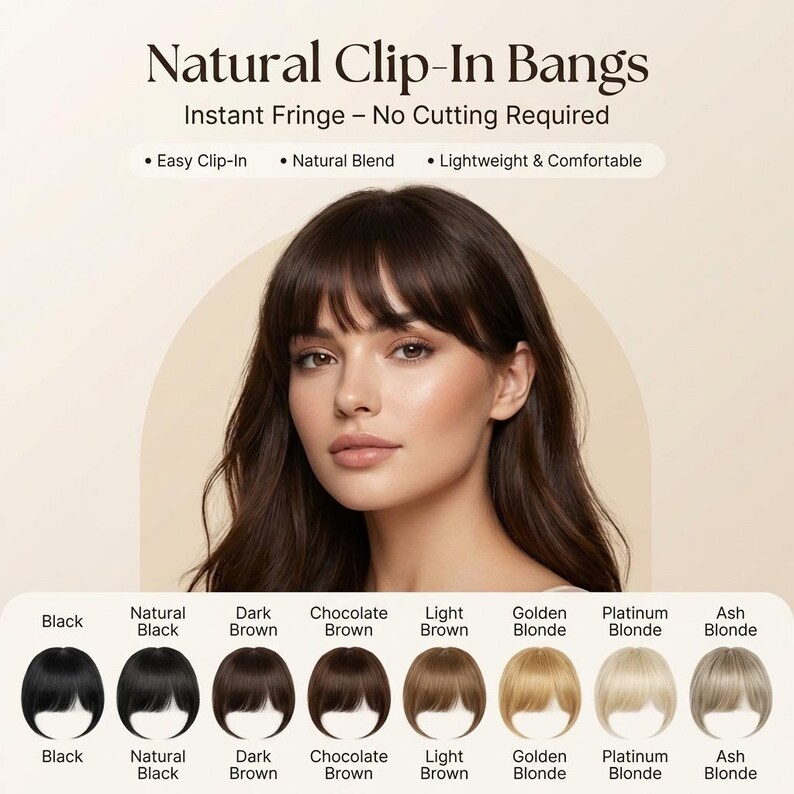
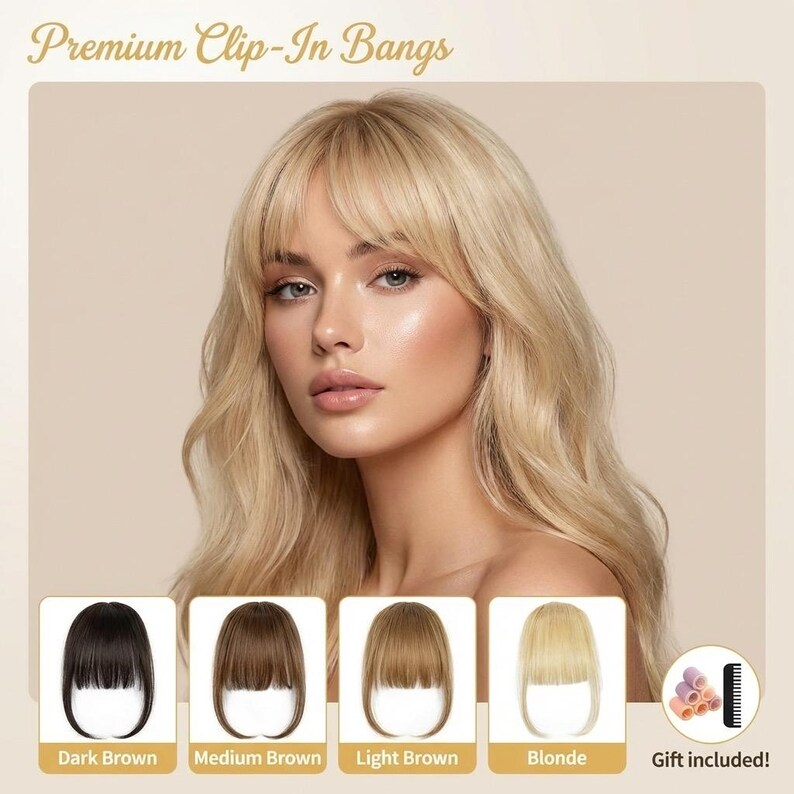
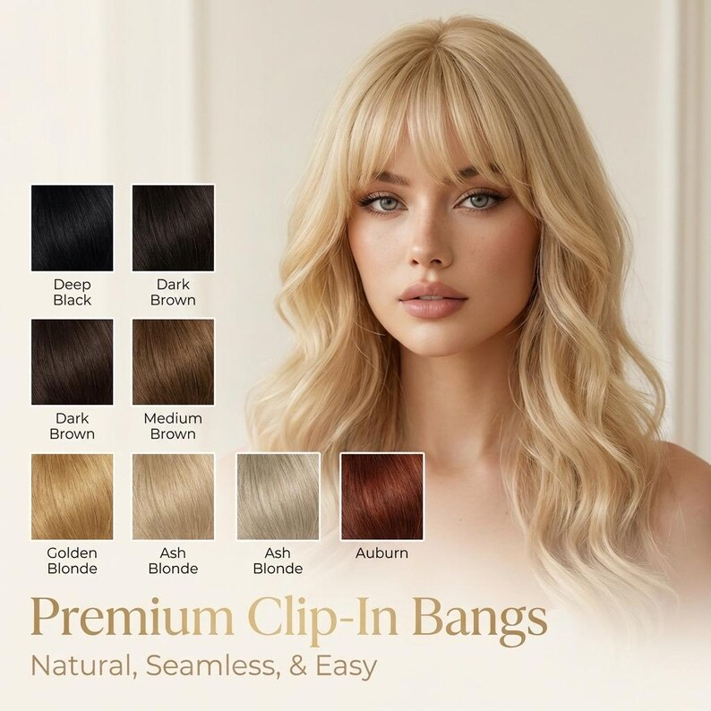
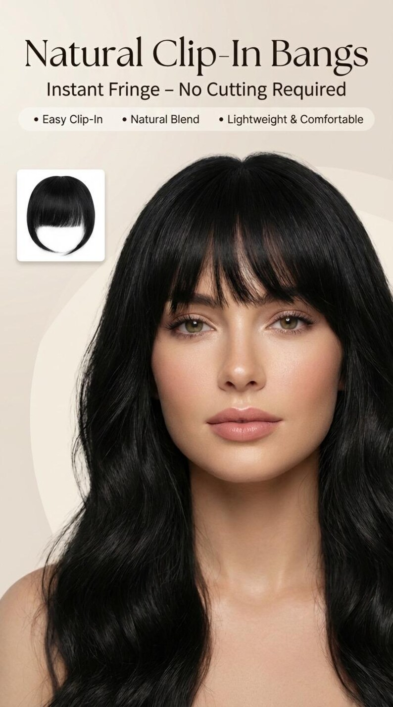
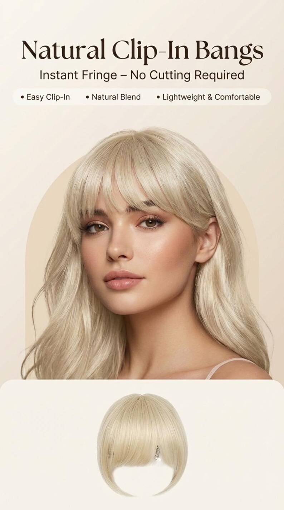
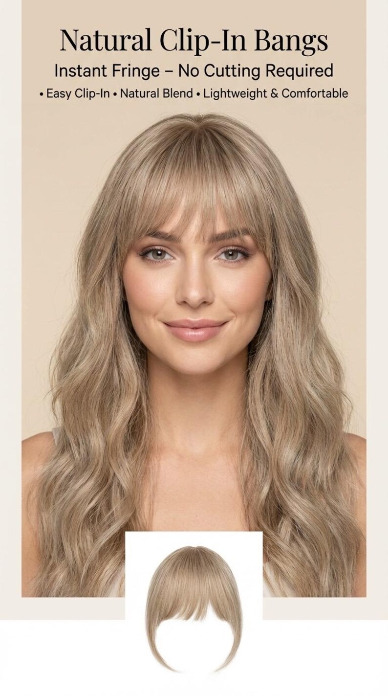
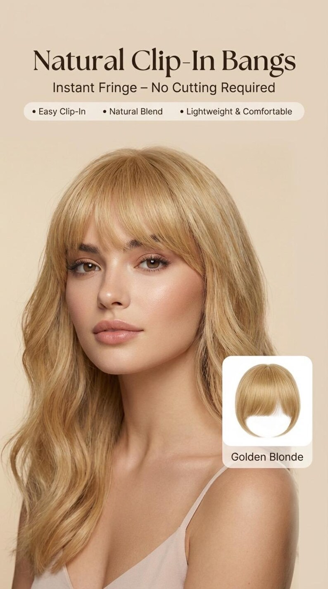
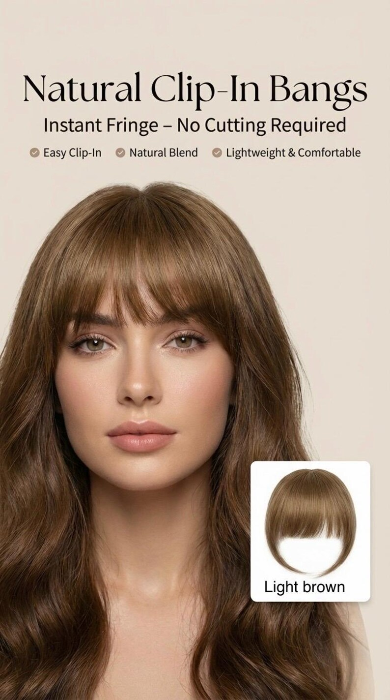
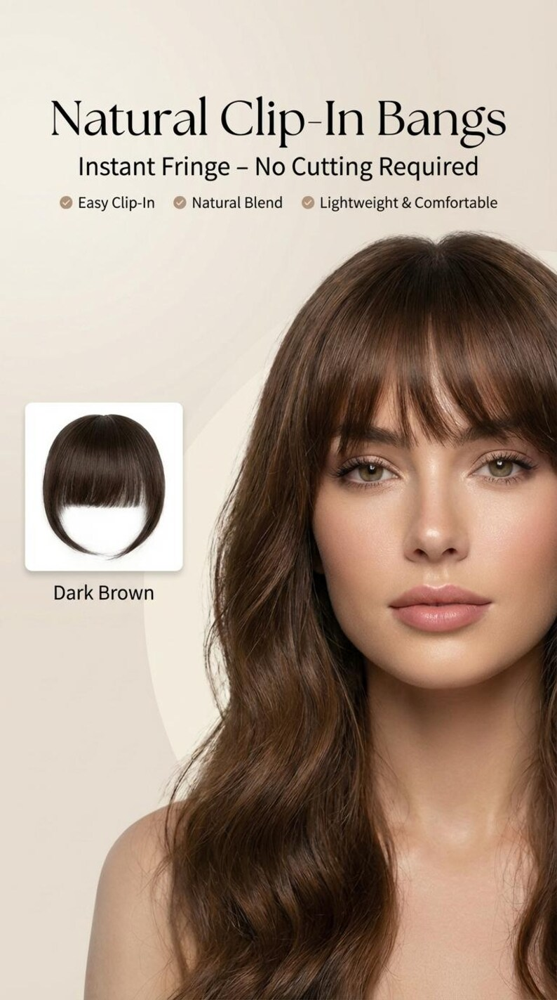
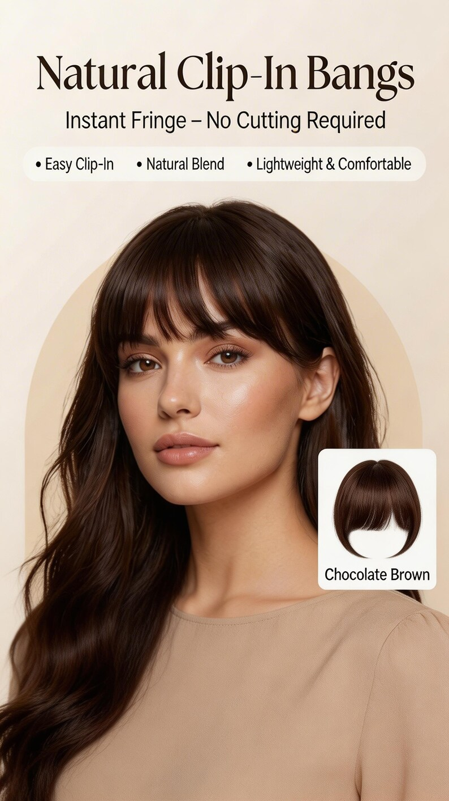
DS HAIR · Synthetic Wigs & Hairpieces
PRODUCT CODE · DS-B-001
An instant fringe reference for professional buyers developing no-cut bangs ranges. The source reference documents a clip-in fringe hairpiece in heat-resistant synthetic fibre with a secure clip design and natural side pieces. DS HAIR production fibre, fringe length, clip specification, colours, tolerances and commercial terms remain subject to sample approval and written specification.
Commercial terms and unconfirmed technical details are provided only after specification review.
BUILD YOUR BUYING BRIEF
These controls prepare an enquiry; they do not indicate live stock. Final feasibility, MOQ, price and lead time are confirmed in writing.
PRIMARY COLOUR SYSTEM
Screen colour is for initial selection only. Final shade approval should use a physical colour ring or confirmed sample. Where the source chart has no published shade code, Ref numbers are temporary website identifiers only.
REQUEST A PHYSICAL COLOUR KIT →BUYER ANSWER
An instant fringe reference for professional buyers developing no-cut bangs ranges. The source reference documents a clip-in fringe hairpiece in heat-resistant synthetic fibre with a secure clip design and natural side pieces. DS HAIR production fibre, fringe length, clip specification, colours, tolerances and commercial terms remain subject to sample approval and written specification.
EVALUATION POINTS
Use a representative sample to turn visual impressions into an approved, repeatable product reference.
Check the fringe length, cut and side pieces against the target face shape and how it blends with the wearer's own hair.
Test clip placement, opening force and temple lift during normal movement and with glasses or headwear.
Approve shine, hand, tangling and a tested heat-care protocol on the actual production fibre.
Approve root, mid-length and end blending under neutral light using a physical shade reference.
Review whether the finished piece feels light and comfortable for daily or event wear.
FORMAT COMPARISON
Clip-in bangs add a fringe without cutting hair, while toppers, crown pieces and wigs solve larger coverage areas.
Scroll horizontally to compare methods →
| Buyer question | Clip-In Bangs | Clip-In Topper | Crown Piece | Full Wig |
|---|---|---|---|---|
| Primary coverage | Front hairline and fringe only | Top and crown coverage | Mid-scalp volume | Full head coverage |
| Attachment | One or two secure clips at hairline | Perimeter clips on a base | Clips at the crown | Cap with combs / adjusters |
| Key buyer check | Fringe shape and temple lift | Base visibility and scalp effect | Blend at the parting | Cap fit and hairline |
| Sample focus | Cut, blend and clip hold | Coverage, parting and attachment | Volume and root blend | Construction, style and fibre |
A fringe solves only the front hairline. Choose the format by the area that needs coverage, not by fibre appearance alone.
THE DS HAIR DIFFERENCE
We compare the way a project is managed—not make unverified statements about another supplier’s hair.
SPECIFICATION STATUS
DS HAIR does not publish assumptions as product specifications. Open items are confirmed against the selected supply batch and quotation.
OEM / PRIVATE LABEL
PROFESSIONAL PRODUCT KNOWLEDGE
Practical guidance for salons, distributors and private-label teams. Product-specific claims still require sample approval.
It is a fringe section attached with one or more clips so the wearer can try bangs without cutting real hair. This source reference uses a secure clip design with natural side pieces.
Check fringe length, cut line, side-piece width, parting option and how it blends with the wearer's own hairline and face shape.
Record clip count, size, coating, opening force and placement, then test security and temple lift during normal movement.
Only within the tested care protocol for the actual production fibre. The source reference describes heat-resistant synthetic fibre, but DS HAIR must validate its own sample before publishing a maximum styling temperature.
Retain an approved sample and written specification covering fibre, fringe length, clip map, colour, care wording, packaging and QC tolerances.
RELATED DEVELOPMENT DIRECTIONS
These are enquiry pathways, not live-stock listings. Each product requires its own specification and sample reference.

A softly waved synthetic chignon reference for professional buyers developing quick updo, bun and occasion-hair ranges. The photographed reference uses a contoured claw clip; production fibre, colour, hardware and commercial terms are confirmed against the approved sample and written specification.
DISCUSS THIS PRODUCT →
A long, straight one-piece clip-in reference for professional buyers developing instant-length and volume ranges. The source reference documents a 22-inch length, an 11 × 6.5-inch base, seven pressure-sensitive clips and a 3.7 oz finished weight. DS HAIR production fibre, heat protocol, colours, tolerances and commercial terms remain subject to sample approval and written specification.
DISCUSS THIS PRODUCT →
A long, soft-curl claw-clip ponytail reference for professional buyers developing quick-application synthetic hairpiece ranges. The source page documents a 21-inch style, flowing curls, a secure claw-clip attachment and a heat-friendly synthetic fibre direction. DS HAIR production fibre, finished weight, clip specification, colour range, heat protocol, tolerances and commercial terms remain subject to sample approval and written specification.
DISCUSS THIS PRODUCT →
A long, straight claw-clip ponytail reference for professional buyers developing quick-application synthetic hairpiece ranges. The source page documents a 21-inch sleek style, secure claw-clip attachment and heat-friendly synthetic fibre direction. DS HAIR production fibre, finished weight, clip specification, colour range, heat protocol, tolerances and commercial terms remain subject to sample approval and written specification.
DISCUSS THIS PRODUCT →BUYER QUESTIONS
It is presented as a B2B development reference. Share the target market, quantity, colour direction, fibre requirement and packaging brief so feasibility and commercial terms can be confirmed.
The source reference documents a secure clip design with natural side pieces. DS HAIR production clip count, size and holding performance require sample approval.
The source reference describes heat-resistant synthetic fibre. The exact DS HAIR production fibre and a validated heat-care protocol require sample confirmation.
Fringe length, shape, side-piece width and colour matching can be reviewed against physical references, artwork and quantity requirements. Available options and minimums require written confirmation.
The clip-in format, heat-resistant synthetic fibre, secure clip design and natural side pieces are taken from a third-party retail reference (Etsy listing 4505020266) for visual and dimensional guidance only; the written DS HAIR specification must be confirmed before quotation.
REFERENCE · DS-B-001
Send the target wearer, fringe length and shape, fibre requirement, clip map, colour direction, packaging brief and estimated quantity so DS HAIR can prepare the correct sample path.
SEND YOUR BUYING BRIEF